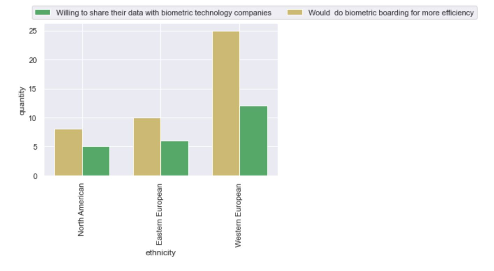

Intellicon: A Multi-Agent AI System for Automated Business Analysis in Consultancy
Overview
Intellicon is a modular multi-agent AI system designed to automate parts of business case analysis in management consultancy. Developed within the University of Amsterdam's Complex Cyber Infrastructure research group as part of the broader Zero Person Company (ZPC) program, the system orchestrates an Analyst agent (reasoning and synthesis) and a Librarian agent (targeted file retrieval) in a parent-child investigation loop, with human review steps preserved across phases. The end-to-end workflow covers three phases: client onboarding (market analysis, interview-insights extraction, and problem-statement drafting), business case investigation (the agentic loop), and structured output creation (automated PowerPoint generation via Presenton). Workflow orchestration is handled in n8n with a clickable front-end prototype, supporting traceability and reproducibility of agent decisions.
Key Findings
Across nine synthetic business cases with defined ground truth, one-shot prompting in the parent-child loop emerged as the optimal configuration, achieving the highest overall grade (4.6/5) and groundedness score (4.8/5) while reducing average token usage by roughly 11% compared to zero-shot. A single interaction example acted as a lightweight coordination protocol that lowered unproductive Analyst-Librarian back-and-forth from 1.6 to 1.2 average iterations. Multi-shot prompting degraded performance by saturating the context window and forcing the Analyst into example-shaped outputs, suggesting that one well-crafted example outperforms volume. The linear baseline remained the cheapest in absolute tokens but lacked the analytical depth of the agentic loop.
Future Directions
The prototype demonstrates feasibility but is not yet deployable. Future work should evaluate Intellicon on more realistic and ambiguous cases, benchmark the Librarian against simple retrieval baselines such as TF-IDF and dense embeddings, and migrate model inference to private infrastructure to meet client confidentiality and GDPR requirements. Strengthening verification and stopping behaviour would let the system more reliably escalate cases with missing or conflicting evidence to a human consultant, supporting the broader vision of human-in-the-loop multi-agent automation in high-stakes professional workflows.
AquaLens: Digital Platform for Urban Water Quality Awareness ★
Overview
In partnership with the Municipality of Amsterdam, the AquaLens project developed an interactive digital platform to promote awareness, understanding, and collaboration around urban aquatic ecosystems. The platform was designed to bridge scientific knowledge, policy implementation, and public awareness for both field experts and the general public. Using User-Centred Design, the Fogg Behaviour Model, and the Technology Acceptance Model, the team created a website featuring scrollytelling, data visualisations, an AI chatbot (Froggy), and a global project database. My primary contribution was developing the AI agent using a RAG-like system that integrates with the Sanity database, processes queries through Meta's Llama-3.3-70B model via TogetherAI API, and deploys through Hugging Face to serve diverse user audiences effectively.
Key Findings
Research revealed that the general public has moderate to low awareness of urban water quality issues, highlighting the need for accessible educational interventions. The platform's narrative design, led by the character Froggy, successfully fostered emotional engagement and knowledge acquisition among general users. Scrollytelling was widely appreciated as an effective way to structure information visually. Through cognitive walkthroughs with 26 participants, the study found that interactive graphs, maps, and data visualisations helped users understand water quality challenges. Expert users valued the global project database and LinkedIn community integration for professional networking, while general users appreciated the intuitive format and educational value. The AI agent demonstrated effectiveness in bridging complex water quality data with diverse audiences through adaptive response patterns and conversation memory management.
Future Directions
While the project successfully created a functional platform supporting awareness, education, and global collaboration, several features require further development. The AI interaction system could benefit from expanded training data and improved query understanding. The LinkedIn forum needs active community management to drive sustained engagement. Future work should include broader testing with healthcare stakeholders, integration of real-time water quality data feeds, and enhancement of machine learning forecasting capabilities. By incorporating user success stories, instructional videos, and additional interactive features, AquaLens can serve as a promising model for future digital tools that connect research, policy, and community action in sustainable water management globally.
Algorithm Audit: Policy Stances and Income Inequality
Overview
This study investigates how political party policies on economics and social inequality affect income inequality, using the Palma ratio as a measure. The research focuses on the period following the Great Recession and uses a combination of quantitative and qualitative methods. Key tools include the Manifesto Project dataset for analysing party policies and the UNU-WIDER World Income Inequality Database for income inequality data. A Generalised Estimating Equations (GEE) regression model was developed, complemented by qualitative validation using human and machine (ManifestoBerta) classification of political manifestos.
Key Findings
The study found that while certain economic policy stances, such as welfare state expansion, were statistically significant predictors of the Palma ratio, they alone were insufficient to fully explain income inequality. Qualitative analysis revealed discrepancies between human and machine classifications of political manifestos, driven by local contexts and personal biases, which exposed the limitations of the ManifestoBerta model. Auditing with the Microsoft Responsible AI Toolbox highlighted regional and feature-specific variability, underscoring the importance of fairness measures in machine learning models.
Future Directions
This study emphasises the critical role of addressing algorithmic biases in predicting income inequality and the value of integrating human insights into machine learning models. Policymakers can leverage these findings to design more inclusive and equitable economic policies while ensuring transparency and fairness in AI-driven decision-making processes. Future research should focus on refining models by incorporating broader datasets and local political contexts.
Making Neighbourhood Hubs Accessible to All ★
Overview
In partnership with the Municipality of Amsterdam, our project investigated shared mobility hubs to provide actionable recommendations for scaling the current 18 mobility hubs to a goal of 2000. Our research focused on increasing the adoption and usage of mobility hubs by analysing factors such as location, user perceptions, and system integration using Social Practice Theory and Systems Thinking. Field research, machine learning (random forest regression), and sentiment analysis highlighted key barriers, including low visibility and accessibility.
Key Findings
Mobility hubs face significant challenges, including low visibility and unclear signage, which hinder user engagement and adoption. Early success is critical to the growth of the mobility hub network, as systems analysis reveals positive feedback loops where established mobility hubs enhance the effectiveness of new ones. Shared mobility has been shown to thrive in high-density, high-income areas and locations near transit hubs. To address these challenges, we recommend introducing temporary mobility hubs through street experiments to normalise their use and increase public awareness.
Future Directions
Our findings confirmed that increasing the network density of mobility hubs and enhancing their visibility will drive adoption and system growth. This project underscores the importance of integrating user perceptions, strategic planning, and systems thinking to design sustainable urban mobility solutions. Future research should address broader demographic impacts, refine predictive models, and evaluate the long-term success of proposed interventions.
Visualisation

Privacy Awareness in Healthcare Institutions
Overview
The project aimed to enhance privacy awareness and cybersecurity within Amsterdam-based healthcare institutions, focusing on OpenKAT, a tool developed by the Dutch Ministry of Health to identify system vulnerabilities and prevent data breaches. Collaborating with Sigra, a healthcare network, the group designed a website prototype to promote OpenKAT's accessibility and usage. The theoretical frameworks used included the Fogg Behavioral Model and the Technology Acceptance Model, guiding the website's design to increase motivation and ability for target users.
Key Findings
The group conducted a focus group with privacy and data security officers to understand the needs and preferences of key stakeholders. Insights revealed the importance of effectively communicating OpenKAT's benefits, designing a user-friendly website that accounts for generational differences, and including real-life use cases to demonstrate the tool's practical applications. The focus group findings informed the creation of two website prototypes for A/B testing, though technical limitations and a restricted sample size highlighted the need for further research.
Future Directions
The project successfully developed a functional website prototype that incorporated stakeholder feedback and adhered to theoretical models of behavior change. Future work should include broader testing with healthcare stakeholders to validate findings and improve website effectiveness. Collaboration with OpenKAT developers could also integrate instructional guides and explanatory content to simplify adoption. By incorporating success stories, instructional videos, and additional user-focused features, the website could further enhance motivation among its audience.
Wireframes


Impact of Facial Recognition Boarding on Privacy Trust at Schiphol Airport
Overview
Facial recognition technology is increasingly being implemented in airports as a replacement for traditional boarding passes. This study investigates how this transition affects travelers' trust in privacy protection at Amsterdam Schiphol Airport. Trust and privacy concerns are central to the debate, as biometrics involve sharing sensitive personal data. The study draws on survey findings from 108 respondents of diverse socio-cultural backgrounds to explore public attitudes toward biometric boarding passes, with a focus on efficiency, safety, and privacy.
Key Findings
The survey revealed that socio-cultural identity significantly influences attitudes toward biometric boarding, with Western Europeans showing greater openness to the technology for efficiency, while Eastern Europeans and North Americans exhibited more hesitancy. Interestingly, North Americans appeared less influenced by privacy concerns compared to Europeans. Despite privacy apprehensions, respondents across all groups showed increased willingness to share biometric data when efficiency improvements were emphasised, highlighting a trade-off between convenience and privacy.
Future Directions
The transition to biometric boarding passes impacts trust in privacy protection. While efficiency motivates adoption, uncertainty about data security and a lack of informed consent remain significant barriers. The study concludes that better communication and transparency from airports and airlines are essential to build trust and increase acceptance. Future research should include larger and more diverse samples, alongside direct engagement with stakeholders like airports and airlines.
Visualisation

How to Improve Water Quality and Biodiversity in Amsterdam's Canals
Overview
Amsterdam's centrum canals face ecological degradation due to pollution and boat traffic, failing to meet the European Water Framework Directive goals for biodiversity and water quality by 2027. Key contributors include sewage overflows during heavy rainfall, urban runoff carrying nitrogen and phosphorous, and disturbances caused by boat activity. This research explored how nature-based solutions can address these challenges, integrating sustainability with biodiversity goals through semi-structured interviews with stakeholders.
Key Findings
The study identified three primary interventions: floating gardens offering nutrient absorption and habitat creation for wildlife; boat zoning to minimise disturbances and allow ecosystems to stabilise; and stormwater filtration systems to tackle urban runoff and prevent contaminants such as heavy metals, nitrogen, and phosphorous from entering the canals. These interventions complement the city's ongoing efforts to upgrade its sewer systems.
Future Directions
To meet the EWFD goals by 2027, the study emphasised the need for large-scale implementation of these interventions. Expanding floating garden initiatives through public-private partnerships can maximise their effectiveness, while stricter regulations on houseboat waste disposal and targeted boat zoning will further alleviate water quality degradation. Public education campaigns and awareness initiatives are recommended to promote a shift in citizen attitudes and behaviors.
F1 in Schools: Team Escaping Singularity
Overview
During my secondary education, I served as the Team Manager for Escaping Singularity, leading a group of six students from concept to World Finals qualification in the internationally recognised F1 in Schools STEM competition. I oversaw the entire project lifecycle, securing key sponsorships, managing budgets and resource allocation, and shaping a cohesive brand identity. Additionally, I established and maintained our team's digital presence by developing and managing the official website. By effectively coordinating every facet of the initiative, I helped elevate Escaping Singularity on the global stage.